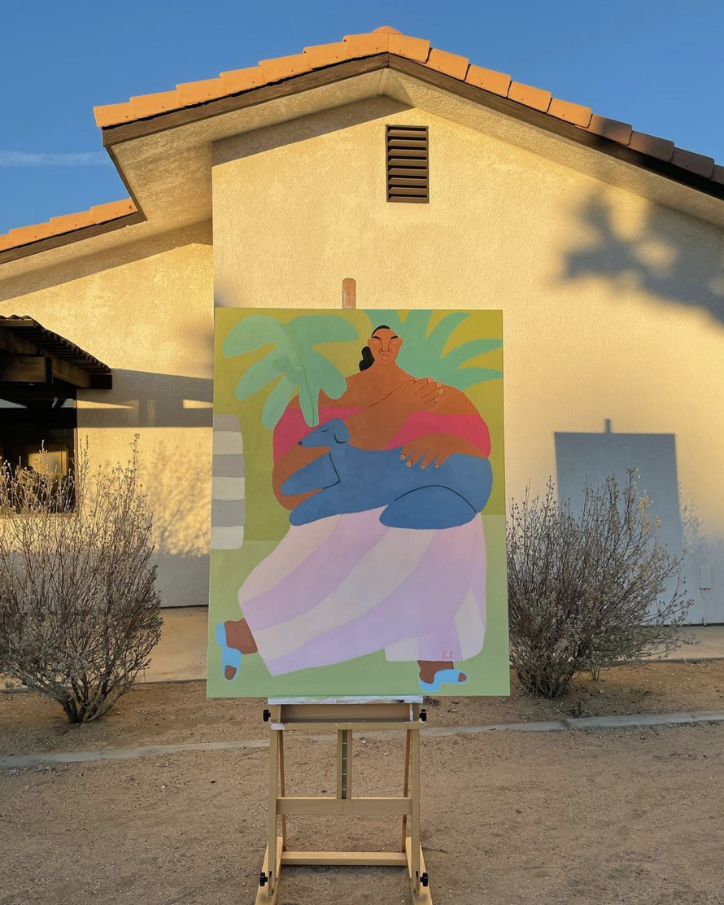
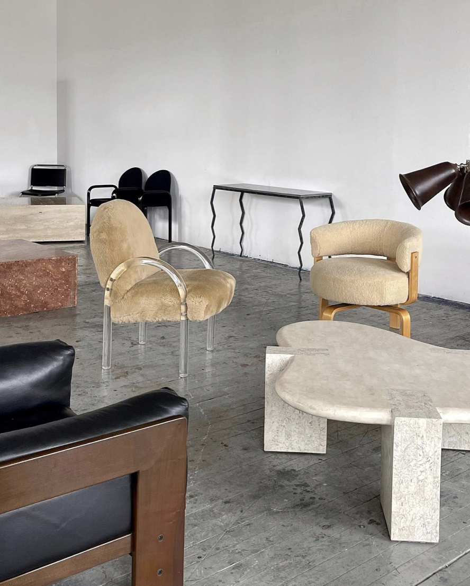
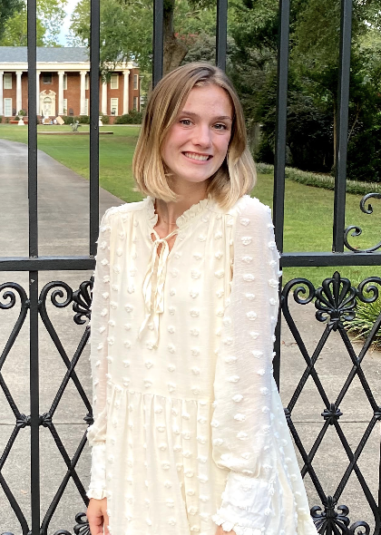

Marketing Major, Pursuing Masters of Information Systems
I chose to study Marketing and Information Systems because I wanted to use my creative and analytical skills together. Marketing was an obvious choice for me as I grew up creating art and always having an eye for the aesthtics, story telling, and creating something new. With this side of me, also came a natural talent for solving problems, and analyzing data. I wanted to find something that I could utilize both sides of my skills and Information Systems intriqued me. I hope to leave this program with a better understanding of the changing world around me and the ability to execute any creative solution I think of.
| Time | Monday | Tuesday | Wednesday | Thursday | Friday |
|---|---|---|---|---|---|
| 9:00 AM | IS Systems Analysis & Design | Consumer Behavior | IS Systems Analysis & Design | Consumer Behavior | No Class |
| 11:00 AM | No Class | Management | No Class | Mangement | No Class |
| 6:00 PM | No Class | Capstone | No Class | Web Development | No Class |
In my time in the workforce, I hope to find myself in a managerial position where I can lead a team in creating meaningful work that impacts our business, our customer, and the greater community. I am seeking to begin learning in the adverstising industry and one day I would enjoy working in internal branding/marketing positions where my technical knowledge can be better used. Some roles I see myself moving into include the following.
Some of my strengths include organization, boldness, time management, cross-functional communication, creative problem solving, and being a strong team player. In the various roles I have held, I have consistently shown the ability to encourage my team to keep deadlines, stay motivated, and make sure everyone is pulling their wait. This begins though with my strength of being a team player. I live by the concept that leaders are their best when they are showing not telling. I always strive to help the team by solving problems and keeping us all involved.
I love going to new restaurants. I love to explore new parts of the city and try foods I haven't had before. I began trying new restaurants with my sister who had developed the same interest with her husband. They would take me to new places for my birthday and other special occasions and are always the ones who send me recommentdations. I am always one new restaurant behind them but love learning from them. Some of my favorite restaurants include the following.
Another of my interests includes art. I enjoy recreationally creating my own art but moreso I love to learn about new artists, follow their work online, and see new exhibits in Cincinnati art museums. Aditional to traditional paintings and drawings, I love the art of architecture and furniture design. I spend a lot of my free time searching for vintage furniture pieces and admiring them from afar. I hope to one day have the ability to have original artwork in my own home.
Thank you for taking time to learn more about me!